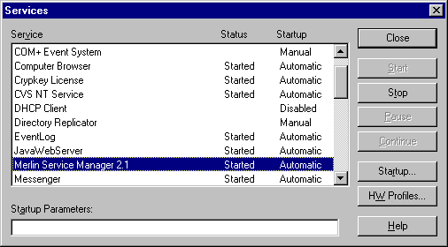
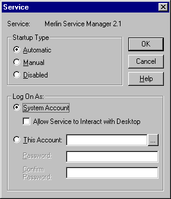

|
|
|
|
Merlin NT ServiceThe Merlin installation includes support for the running of a Merlin Kernel as an Windows(TM) NT4 Service.
Service InstallationInstallation of the service is achieved using the following command:
$ cd %MERLIN_HOME%\bin
$ InstallService-NT.bat
After installation please check the service startup parameters by using the Service manager in the Windows Control Panel.  Service ConfigurationPlease make sure that the service is correctly assigned with a user or system account. If you are using Merlin under the system account you must ensure that the MERLIN_HOME environment variable is declared in system scope.  Service RemovalDeinstallation of the service is achieved using the following command:
$ cd %MERLIN_HOME%\bin
$ UninstallService-NT.bat
|